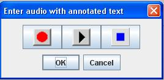

Wolf allows entry of multimedia entities that attach to words, definitions, and examples. These entities can be audio recordings, pictures, and video clips. The pictures below show the WOLF controls that enable this capability.
|  |
The middle picture above shows a dictionary cell used for entering a word. On its right is a picture of a camera. This indicates that the word has a picture attached. The three icons on the right of the picture show the images that will appear when audio, pictures, and video are respectively attached to words, definitions, or examples. If you see a blank, and not one of these three icons, it means that no multimedia entity is attached as yet.
To attach a pre-recorded audio, picture, or video clip, simply open the directory containing the files you want, click on the multimedia file, and with the mouse pressed, drag it to the dictionary cell to which it should attach, and then release. To hear the audio, see the picture, or play the video, after it is attached, click on the icon.
A word, definition, or example can contain more than one multimedia entity. This is why the above middle picture shows up and down arrows. This is known as a spinner component; click on these to spin to one of the other entities. With each click, the icon picture will change to reflect another entity. At present, WOLF only allows one multimedia entity of each type.
Clicking on the audio icon will cause a dialog to appear (refer to the left picture above). To use this dialog, click the middle button to play the audio. Optionally, you can record yourself. Click the red circle, record, then click the blue square when you are done, and click the middle button to hear how it sounds. You can also use this procedure to initially attach an audio recording. Click on the blank square before attaching other multimedia files.
Playing a video clip utilizes a media player that has controls similar to many video applications. Use these to play, pause, position, etc.
If you make a mistake, it is easy to remove multimedia from the dictionary. Press the mouse on the icon, and with it depressed, drag off the WOLF application frame, and then release. WOLF will remove the appropriate audio, picture, or video clip from the dictionary.
At the very top of the WOLF application frame are audio controls as shown in the picture below. These show on Windows systems, but not on MACS. They allow you to control the volume level for audio playback and microphone sensitivity for recording.
There is one last icon on the very top right of the WOLF application frame that when clicked brings up a dialog that enables you to alter audio parameters. This feature generally is not needed, however, if you have multiple microphones on your system you can select the one you want to use. You can also customize the samples per second for recording to save memory (Mac systems require 44100 samples per second, but Windows systems work well with lower values like 16000). Another option is the decibel level needed before microphones will begin recording. This feature is initially disables with a value of zero. You can experiment with positive values (like 30 for example) if you like. The audio options dialog provides many additional inputs that we will not describe here; you should leave alone any of those that you that you don't understand. These inputs help us in our research.